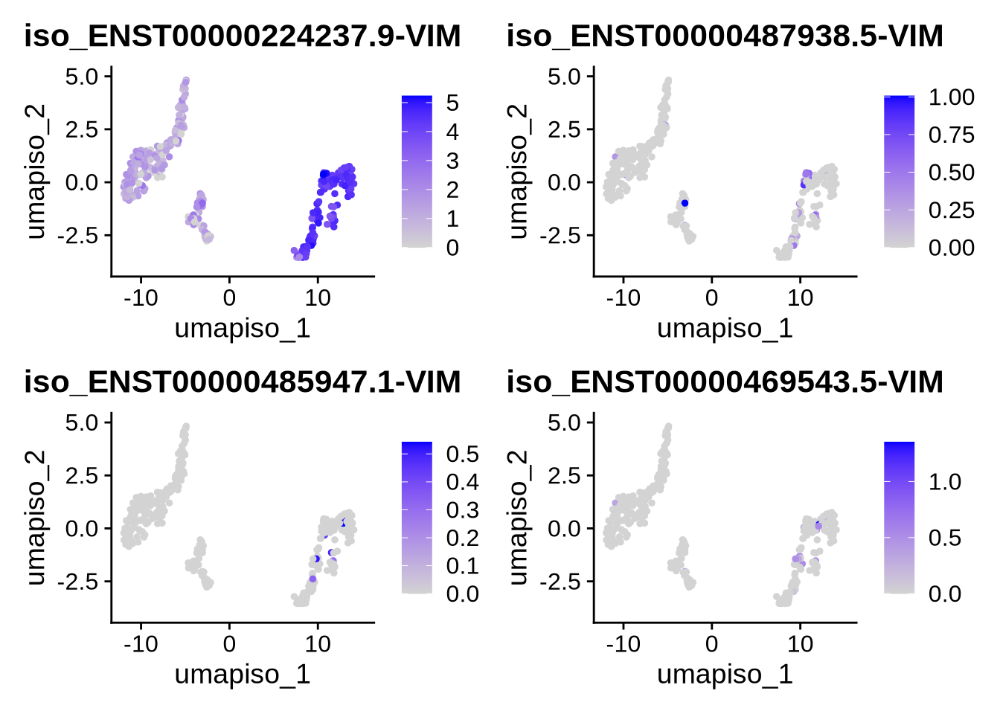
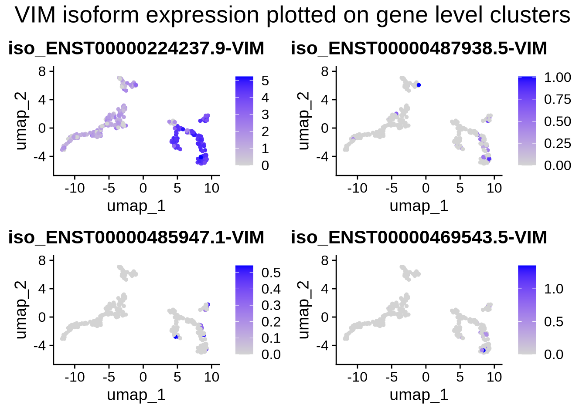
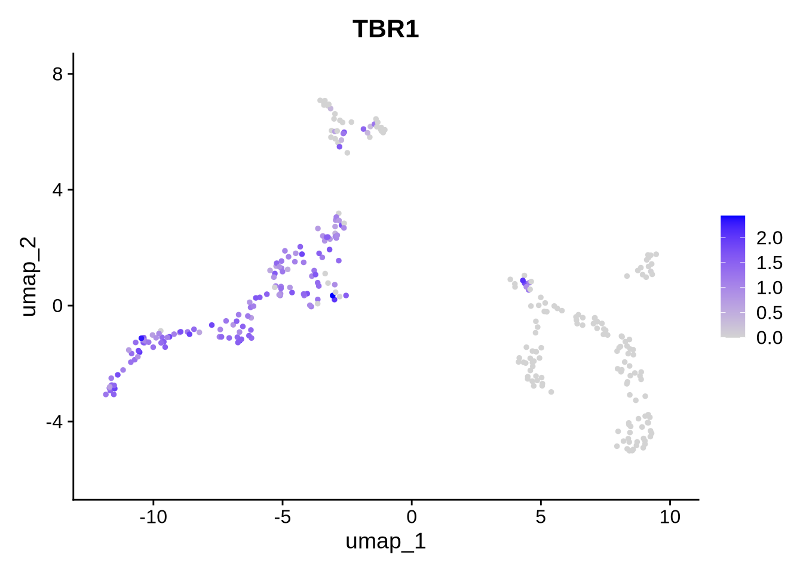

Chapter 4 Add isoform counts to Seurat object
4.1 Create a Seurat object with isoform expression data
Now that we have 309 high-quality cells for our downstream analysis, let’s incorporate isoform-level information into our Seurat object. The first step is to read in the outputs from FLAMES, which provides isoform-level counts from Oarfish. We’ll create a new Seurat object for this data, specifically for the isoform counts, and add it as a new assay to our existing object. This setup will allow us to explore both gene-level and isoform-level counts within a single Seurat object, giving us a more comprehensive view of our data.
Code
#This function reads in Oarfish count files and creates a csv file of count data. The function also appends the gene symbol to the ENSTID
process_oarfish_files_to_counts_matrix <- function(flames_output_folder, sample_name, output_dir) {
# Read in the resource table (transcript_id, gene_id, gene_symbol)
# Define the file paths based on the sample name
count_matrix_path <- file.path(flames_output_folder, paste0(sample_name, ".count.mtx"))
barcodes_path <- file.path(flames_output_folder, paste0(sample_name, ".barcodes.txt"))
features_path <- file.path(flames_output_folder, paste0(sample_name, ".features.txt"))
# Read the data
counts <- readMM(count_matrix_path)
barcodes <- readLines(barcodes_path)
features <- read.delim(features_path, header = FALSE)
# Transpose the matrix for Seurat compatibility
counts <- t(counts)
# Set row and column names
rownames(counts) <- features$V1
colnames(counts) <- barcodes
# Convert to a data frame
counts_df <- as.data.frame(counts)
# Add transcript_id as the first column
counts_df$transcript_id <- rownames(counts_df)
counts_df <- counts_df[, c(ncol(counts_df), 1:(ncol(counts_df)-1))]
# Merge with the resource table to add gene symbols
df_genesymbol <- counts_df %>%
left_join(isoform_gene_dict, by = "transcript_id")
# Remove the gene_id column and reorder the columns
df_genesymbol$gene_id <- NULL
df_genesymbol <- df_genesymbol[, c(ncol(df_genesymbol), 1:(ncol(df_genesymbol)-1))]
# Update row names to include gene symbol instead of transcript_id
rownames(df_genesymbol) <- paste0(df_genesymbol$transcript_id, "_", df_genesymbol$gene_symbol)
df_genesymbol$transcript_id <- NULL
df_genesymbol$gene_symbol <- NULL
# Write the output to a CSV file
output_path <- file.path(output_dir, paste0("gene_symbol_", sample_name, "_counts.csv"))
write.csv(df_genesymbol, output_path)
cat("Processed sample:", sample_name, "\nOutput saved to:", output_path, "\n")
return(df_genesymbol)
}
oarfish_counts <- process_oarfish_files_to_counts_matrix(
flames_output_folder = "/data/scratch/users/yairp/FLAMES_Day55/outs/",
sample_name = "oarfish",
output_dir = "./output_files/counts/"
)## Processed sample: oarfish
## Output saved to: ./output_files/counts//gene_symbol_oarfish_counts.csvCode
# Create the Seurat object with iso counts
iso_seurat_obj <- CreateSeuratObject(counts = oarfish_counts, project = sample_id)
VlnPlot(iso_seurat_obj, features = c("nFeature_RNA", "nCount_RNA"), ncol = 2) + plot_annotation(title = "QC plots (isoform level) BEFORE Filtering")4.2 Filter the new Seurat object based on gene level information
We have now created a Seurat object with isoform-level count data. Users can take this object and follow similar processing steps as at the gene level 3, which might include filtering out low-quality cells and removing ambient RNA counts. In our case, we evaluated these steps and found they don’t add much value as low quality cells are already removed at the gene level and we can leverage this information rather than processing the isoform counts in the same way. Additionally, tools like DeconX and SoupX haven’t been tested on isoform count data, so we decided to exclude this analysis. Instead, we believe the most valuable approach is to append the isoform data to our gene-level Seurat object, resulting in two assays: one for gene-level and one for isoform-level data. If users have short-read data, they could similarly add it as a third assay.
Since we’ve already filtered out low-quality cells based on our gene-level data, we’ll use these high-quality cells to filter our isoform data.
Code
#### isofrom assay
## filter the data so iso and gene cells match
oarfish_iso_matched_gene <- subset(iso_seurat_obj, cells =filt_seurat_object@graphs[["RNA_nn"]]@Dimnames[[1]])
#Rejoin data sets after integration
oarfish_iso_matched_gene <- JoinLayers(oarfish_iso_matched_gene)
counts_table_iso <- oarfish_iso_matched_gene[["RNA"]]$counts
as.data.frame(counts_table_iso) -> df_iso
# Remove rows where the sum is 0
df_iso <- df_iso[rowSums(df_iso) != 0, ]
filt_seurat_object[["iso"]] <- CreateAssay5Object(counts = df_iso)
# Normalize the new assay data
filt_seurat_object <- NormalizeData(filt_seurat_object, assay = "iso")
filt_seurat_object <- FindVariableFeatures(filt_seurat_object, assay = "iso")
filt_seurat_object <- ScaleData(filt_seurat_object, assay = "iso")
filt_seurat_object <- RunPCA(filt_seurat_object, assay = "iso", reduction.name = "pca_iso")
#Run UMAP
filt_seurat_object <- RunUMAP(filt_seurat_object, reduction = "pca_iso", dims = 1:15,
assay = "iso", reduction.name = "umap_iso")
#check to see that we have two assays
filt_seurat_object## An object of class Seurat
## 93557 features across 309 samples within 3 assays
## Active assay: RNA (14906 features, 2000 variable features)
## 3 layers present: counts, data, scale.data
## 2 other assays present: joined, iso
## 4 dimensional reductions calculated: pca, umap, pca_iso, umap_isoCode
# visualize the UMAP for Gene and isoform
DimPlot(filt_seurat_object, label = TRUE, reduction = "umap") + ggtitle("UMAP gene level clustering") |
DimPlot(filt_seurat_object, label = TRUE, reduction = "umap_iso") + ggtitle("UMAP isoform level clustering")Code
seu_obj <- filt_seurat_object
saveRDS(seu_obj, file = "./output_files/seu_objects/Day55_tutorial_gene_and_isoform_seurat.rds")4.3 Add the isoform assay to the Seurat object
Great! We now have an object containing both assays, so we can start by plotting some of our favorite genes and isoforms. This setup gives us the flexibility to visualize gene expression on isoform UMAPs and vice versa, allowing us to integrate and explore the expression of both gene and isoform expression within single cells on the same dimensional reduction.
Let’s begin by plotting VIM and TBR1. VIM is a marker of progenitor cells, while TBR1 is a marker of deep layer neurons.
Code
####### test plotting on iso assays ##
features <- rownames(filt_seurat_object@assays$iso@features)
gene <- "VIM"
plot_features_list <- grep(paste0("(^|-|\\b)", gene, "($|\\b)"), features, value = TRUE)
#We can now plot our favorite gene and all its corresponding isoforms on either the gene or isoform UMAPs. To switch between them, simply change the reduction argument to the desired UMAP (either the gene or isoform reduction)
FeaturePlot(filt_seurat_object, features = plot_features_list, reduction = "umap_iso") 
Code
FeaturePlot(filt_seurat_object, features = gene, reduction = "umap")Code
#lets also plot the isoform data on the gene level clsuters.
FeaturePlot(filt_seurat_object, features = plot_features_list, reduction = "umap") +
plot_annotation(
title = 'VIM isoform expresstion plotted on gene level clusters',
#caption = 'made with patchwork',
theme = theme(plot.title = element_text(size = 20))
)
Code
gene <- "TBR1"
plot_features_list <- grep(paste0("(^|-|\\b)", gene, "($|\\b)"), features, value = TRUE)
#We can now plot our favorite gene and all its corresponding isoforms on either the gene or isoform UMAPs. To switch between them, simply change the reduction argument to the desired UMAP (either the gene or isoform reduction)
FeaturePlot(filt_seurat_object, features = plot_features_list, reduction = "umap_iso") Code
FeaturePlot(filt_seurat_object, features = gene, reduction = "umap")
Code
#lets also plot the isoform data on the gene level clsuters.
FeaturePlot(filt_seurat_object, features = plot_features_list, reduction = "umap") +
plot_annotation(
title = 'TBR1 isoform expresstion plotted on gene level clusters',
#caption = 'made with patchwork',
theme = theme(plot.title = element_text(size = 20))
)We observe that the expression of VIM and TBR1 are is localized to two distinct clusters, which aligns with our expectations. This suggests that some cells remain in the progenitor/radial glial stage, while others have already begun differentiating into neurons. Furthermore, our data reveals isoform-level expression for each of our genes, including TBR1, which shows distinct isoform expression patterns across different cell populations. To plot genes and expressed isoforms from that gene simply change the ‘gene’ value to your favorite gene and run the code chunk above.
Now we have a count matrix with two assays, gene and isoform. There are many avenues for analysis. We will begin with finding DE genes and isoforms. Then we identify cell types and perform trajectory analysis. finally we look into interesting isoforms unique to each cluster